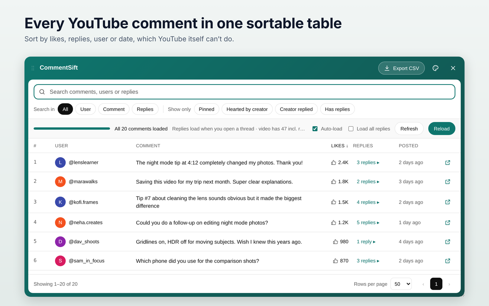
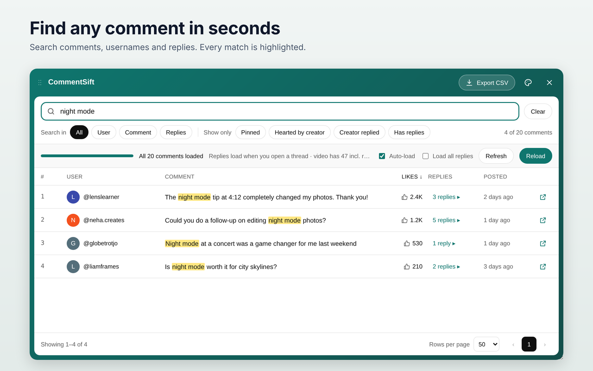
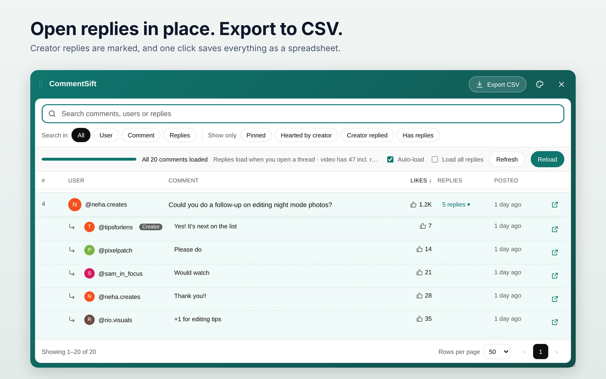
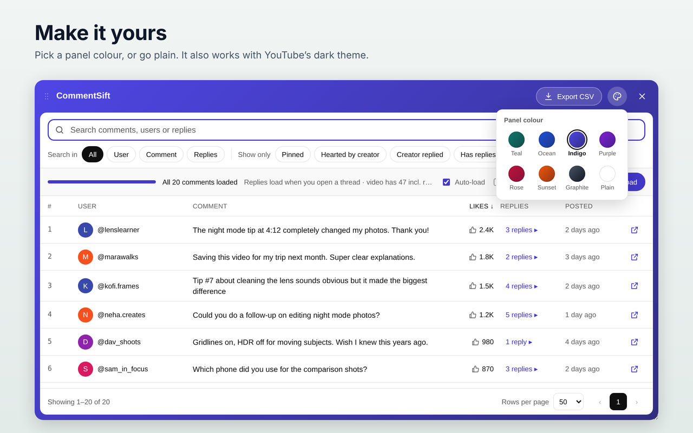
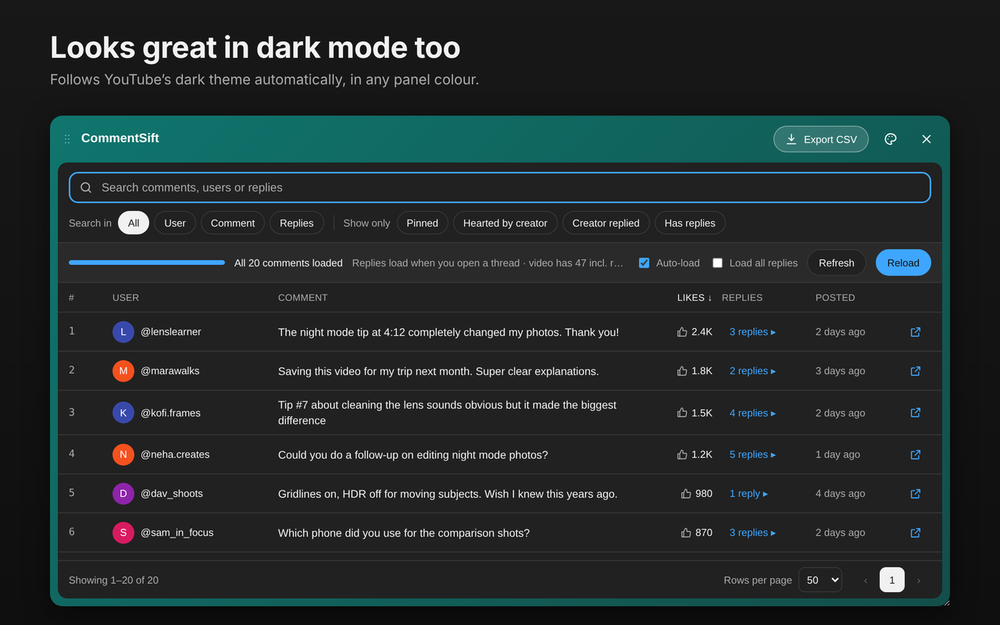

What you can do
Search every comment
Find any word in comments, usernames or replies. Every match is highlighted.
Sort your way
By likes, number of replies, username or date, which YouTube itself can't do.
Quick filters
Pinned, hearted by the creator, creator replied, or comments with replies.
Replies in place
Open any thread inside the table. Creator replies are clearly marked.
Export to CSV
Save comments as a spreadsheet for Excel or Google Sheets.
Make it yours
Eight panel colours, and it follows YouTube's dark theme.
See it in action




How to use
- Install CommentSift from the Chrome Web Store.
- Open any YouTube video and scroll to the comments.
- Click Table view next to YouTube's "Sort by", or press Alt+Shift+C.